Html
3 anos de experiência
HTML é uma linguagem de marcação utilizada na construção de páginas na Web.
Css
3 anos de experiência
O CSS é uma linguagem de folhas de estilos, criada com o propósito de estilizar as páginas HTML.
JavaScript
3 anos de experiência
JavaScript é uma linguagem de programação interpretada estruturada, de script em alto nível com tipagem
dinâmica fraca e multiparadigma.
TypeScript
3 anos de experiência
TypeScript é um superconjunto de JavaScript, ou seja, um conjunto de ferramentas e formas mais eficientes de
escrever código JavaScript.
ReactJS
3 anos de experiência
O React é uma biblioteca JavaScript de código aberto com foco em criar interfaces de usuário em páginas web.
Git
3 anos de experiência
Um sistema de controle de versão de arquivos. Através deles podemos desenvolver projetos na qual diversas
pessoas podem contribuir.
Python
3 anos de experiência
O Python é uma linguagem muito popular nas áreas da tecnologia relacionadas à análise de dados, pesquisa, desenvolvimento de algoritmos e IA.
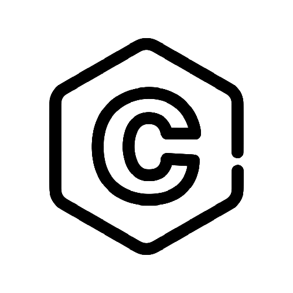
C
3 anos de experiência
C é uma linguagem de programação compilada de propósito geral, estruturada, imperativa, procedural, padronizada pela Organização Internacional para Padronização.
Sass
3 anos de experiência
Sass é uma linguagem de folhas de estilo concebida inicialmente por Hampton Catlin e desenvolvida por Natalie Weizenbaum. Depois de suas versões iniciais.
C++
3 anos de experiência
C++ é uma das linguagens mais versáteis que existem, permitindo desenvolver desde tarefas simples como aplicações na linha de comando ou web, até sistemas complexos de tempo real, muito usadas no mercado financeiro.
Java
3 anos de experiência
Java é uma linguagem de programação e um ambiente computacional criado pela Sun Microsystems na década de 90, sendo posteriormente adquirido pela Oracle.
PHP
3 anos de experiência
O PHP é uma linguagem de programação voltada originalmente para desenvolvimento de sites e aplicações web. Por ser de código aberto e de fácil aprendizado, é uma das mais populares do mundo.
R
3 anos de experiência
R é uma linguagem de programação multi-paradigma orientada a objetos, programação funcional, dinâmica, fracamente tipada, voltada à manipulação.
Swift
3 anos de experiência
Swift é uma linguagem de programação desenvolvida pela Apple para desenvolvimento no iOS, macOS, watchOS, tvOS e Linux. Swift foi desenvolvida para manter compatibilidade com a API Cocoa e com código
Kotlin
3 anos de experiência
Kotlin é uma linguagem de programação multiplataforma, orientada a objetos e funcional, concisa e estaticamente tipada.
Go
3 anos de experiência
É uma linguagem compilada e focada em produtividade e programação concorrente, baseada em trabalhos feitos no sistema operacional chamado Inferno.
Ruby
3 anos de experiência
Ruby é uma linguagem de programação interpretada multiparadigma, de tipagem dinâmica e forte, com gerenciamento de memória automático.
Scala
3 anos de experiência
Scala é uma linguagem de programação de propósito geral, diga-se multiparadigma, projetada para expressar padrões de programação comuns de uma forma concisa, elegante e type-safe.
Rust
3 anos de experiência
Rust é uma linguagem de programação multiparadigma compilada desenvolvida pela Mozilla Research. É projetada para ser "segura, concorrente e prática", mas diferente de outras linguagens seguras
Dart
3 anos de experiência
Dart é uma linguagem de script voltada à web desenvolvida pela Google. Dart foi inicialmente a de substituir a JavaScript como a linguagem principal embutida nos navegadores.
Lua
3 anos de experiência
Lua é uma linguagem de programação interpretada, de script em alto nível, para expandir aplicações em geral, de forma extensível, para prototipagem e para ser embarcada em softwares complexos, como jogos.
Perl
3 anos de experiência
Perl é uma família de duas linguagens de programação multiplataforma, Perl 5 e Perl 6. Originalmente, a linguagem passou por muitas atualizações e revisões até chegar à versão Perl 5 em 1994.
Elixir
3 anos de experiência
Elixir é uma linguagem de programação funcional, concorrente, de propósito geral que executa na máquina virtual Erlang.
Markdown
3 anos de experiência
Markdown é uma linguagem de marcação com formato de texto simples. Com ele, adicionando elementos de formatação a documentos de texto simples.
Shell Script
3 anos de experiência
Shell script é o nome dado a um arquivo que será interpretado por algum programa tipo Shell. Atualmente existem vários programas tipo Shell, Um Shell script necessita basicamente do interpretador Shell.
Express.js
3 anos de experiência
o Express. js foi desenvolvido para otimizar a construção de aplicações web e APIs, tornando-se um dos Frameworks mais populares da internet e que utiliza o Node para execução do javascript, de back-end.
Gatsby
3 anos de experiência
Gatsby é uma framework escrita em JavaScript e React, cuja proposta é ajudar desenvolvedores a construir aplicações e websites de forma facilitada. O foco do Gatsby é proporcionar um desenvolvimento rápido.
React Native
3 anos de experiência
React Native é uma biblioteca Javascript criada pelo Facebook. É usada para desenvolver aplicativos para os sistemas Android e iOS de forma nativa.
Svelte
3 anos de experiência
Isso mesmo, o Svelte não é um framework, ele interpreta os arquivos “. svelte” e retorna um JavaScript puro, sem dependência de nenhum framework. Nesse package. json de um projeto Svelte.
Vue.js
3 anos de experiência
Vue.js é um framework JavaScript de código-aberto, focado no desenvolvimento de interfaces de usuário e aplicativos de página única.
Angular
3 anos de experiência
Angular é uma plataforma de aplicações web de código-fonte aberto e front-end baseado em TypeScript liderado pela Equipe Angular do Google e por uma comunidade de indivíduos e corporações.
Tailwind CSS
3 anos de experiência
Tailwind CSS é um framework desenvolvido para maximizar o potencial do bom e velho CSS e levá-lo ainda mais longe. De forma bastante simplificada e intuitiva, ele oferece responsividade, código enxuto, customização
Bootstrap
3 anos de experiência
Bootstrap é um framework front-end que fornece estruturas de CSS para a criação de sites e aplicações responsivas de forma rápida e simples.
Redux
3 anos de experiência
Redux é uma biblioteca para armazenamento de estados de aplicações JavaScript, criado por Dan Abramov. Ele nasceu através de uma implementação do Flux
React Router
3 anos de experiência
O React Router é a biblioteca de roteamento padrão do React. Quando você precisar navegar por uma aplicação React com várias visualizações.
Docker
3 anos de experiência
Docker é um conjunto de produtos de plataforma como serviço que usam virtualização de nível de sistema operacional para entregar software em pacotes, softwares, bibliotecas.
CSHARP
3 anos de experiência
Csharp é uma linguagem de programação, multiparadigma, de tipagem forte, sintaxe orientada a objetos foi baseada no C++ mas inclui muitas influências de outras linguagens de programação.
Laravel
3 anos de experiência
Laravel é um framework PHP livre e open-source criado por Taylor B. Otwell para o desenvolvimento de sistemas web que utilizam o padrão MVC.
Flutter
3 anos de experiência
Flutter é um framework, um kit de desenvolvimento de código aberto (opensource) criado pelo Google. Ele facilita o desenvolvimento da interface.
Spring
3 anos de experiência
O Spring é um framework Java criado com o objetivo de facilitar o desenvolvimento de aplicações, explorando, para isso, os conceitos de Inversão de Controle e Injeção de Dependências.
Flask
3 anos de experiência
Flask é um micro framework que utiliza a linguagem Python para criar aplicativos Web.
MySQL
3 anos de experiência
O MySQL utiliza a linguagem SQL (Structure Query Language – Linguagem de Consulta Estruturada), que é a linguagem mais popular para inserir, acessar e gerenciar o conteúdo armazenado.
PostgreSQL
3 anos de experiência
PostgreSQL é um sistema gerenciador de banco de dados objeto relacional, desenvolvido como projeto de código aberto.
SQL
3 anos de experiência
Structured Query Language, ou Linguagem de Consulta Estruturada ou SQL, é a linguagem de pesquisa declarativa padrão para banco de dados relacional.
Netlify
3 anos de experiência
O Netlify é um serviço para hospedar sistemas que tem sua stack baseada em tecnologias front-end, que basicamente não precisam de banco de dados ou linguagens back-end para funcionar.
ansible
3 anos de experiência
Ansible é um mecanismo de automação simples e poderoso. Ele é usado para ajudar no gerenciamento de configuração, implantação de aplicativos e automação de tarefas.
AutoHotkey
3 anos de experiência
O AHK é uma linguagem fracamente tipada (como Python e PHP), permitindo que o tipo de dados armazenados em uma variável possa ser alterado dinamicamente durante a execução do programa [79].
android
3 anos de experiência
O Android foi projetado e construído pelo Google em 2008. O sistema operacional é escrito principalmente em Java, com componentes centrais em C e C++. Ele é construído em cima do kernel Linux
arduino
3 anos de experiência
Arduino é uma empresa de hardware e software de código aberto e uma comunidade de fabricantes. O Arduino começou no início dos anos 2000. Popular entre os fabricantes de eletrônicos.
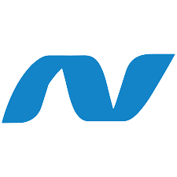
ASP
3 anos de experiência
O ASP, também conhecido como ASP Clássico hoje em dia, é uma estrutura de bibliotecas básicas para processamento de linguagens de script no lado servidor para geração de conteúdo dinâmico na Web
assembly
3 anos de experiência
Assembly ou linguagem de montagem é uma notação legível por humanos para o código de máquina que uma arquitetura de computador específica usa, utilizada para programar códigos.
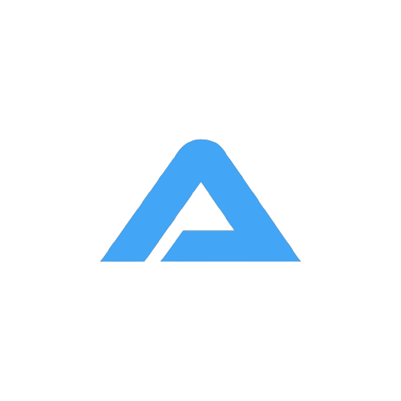
autoit
3 anos de experiência
AutoIt é uma linguagem de automação grátis para sistema Windows. Que facilitam o gerenciamento do sistema, fazer manutenção, instalação de softwares, etc.
babel
3 anos de experiência
O babel é um transpilador JavaScript. Quando você tem um código ES2015, que é a versão atual de JavaScript, deve utilizar o transpilador para converter o código novo e gerar, assim, um novo código
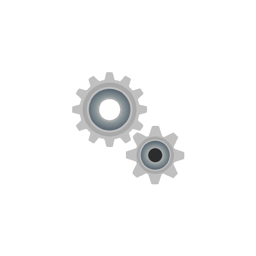
bat
3 anos de experiência
bat pode ser definido como um conjunto de comandos executados em lote (sequencialmente). Criado para o MS-DOS tem a função de automatizar tarefas rotineiras e muitas vezes trabalhosas.
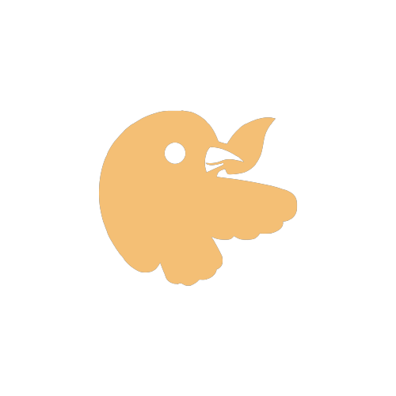
bower
3 anos de experiência
No desenvolvimento front-end, uma ferramenta que vem ganhando bastante espaço nessa área é o Bower. Como o bower é para gerenciar componentes de front-end.
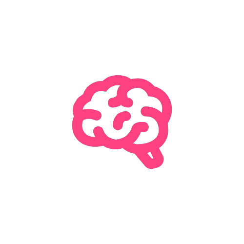
brainfuck
3 anos de experiência
brainfuck, também conhecido como brainf*ck ou BF, é, Ela é uma linguagem Turing completa, desenhada para desafiar e confundir os programadores, e não é útil para uso prático.
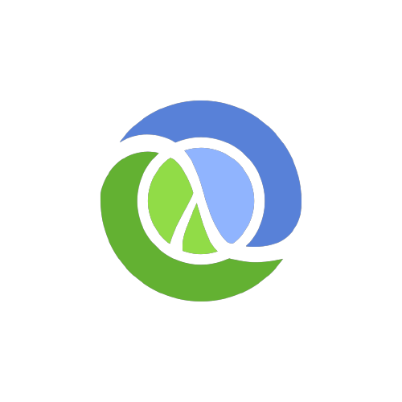
clojure
3 anos de experiência
Clojure é um dialeto da linguagem de programação Lisp criado por Rich Hickey. Clojure é uma linguagem de programação de propósito geral com ênfase em programação funcional.
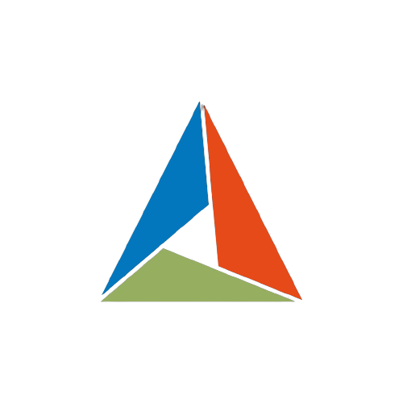
cmake
3 anos de experiência
CMake é um sistema multiplataforma para realizar geração automatizada. É comparável com o programa Unix Make no qual o processo de geração é, ao final, controlado pelos arquivos de configuração
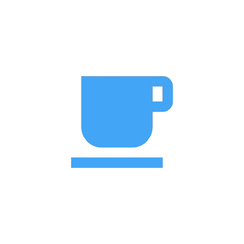
coffee
3 anos de experiência
CoffeeScript é uma linguagem de programação que transcompila para JavaScript. A linguagem adiciona elementos de sintaxe inspirados no Ruby, Python e Haskell
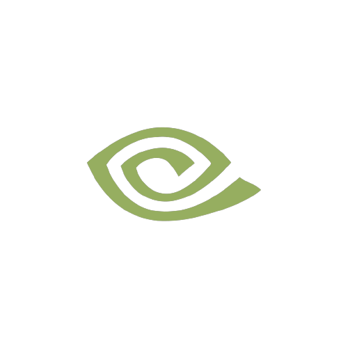
cuda
3 anos de experiência
CUDA é uma API destinada a computação paralela, GPGPU, e computação heterogênea, criada pela Nvidia. destinada a placas gráficas que suportem a API. A plataforma CUDA
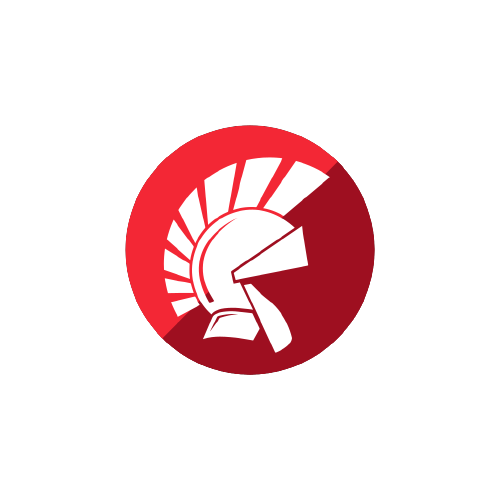
delphi
3 anos de experiência
Embarcadero Delphi, anteriormente conhecido como CodeGear Delphi, Inprise Delphi e Borland Delphi, também conhecido como Delphi, é um compilador, uma IDE e uma linguagem de programação
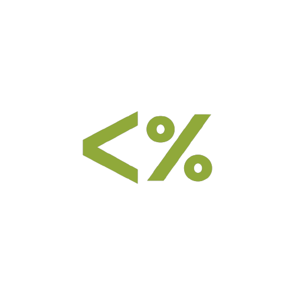
ejs
3 anos de experiência
Chama-se Embedded JavaScript templating (EJS) e é uma linguagem de modelagem simples que permite gerar marcação HTML com JavaScript simples. Como principais características
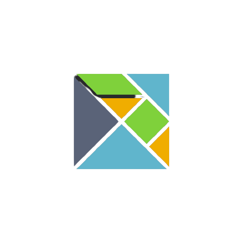
elm
3 anos de experiência
Elm é uma linguagem de programação específica de domínio para criar declarativamente interfaces gráficas com o usuário baseadas em navegador da web
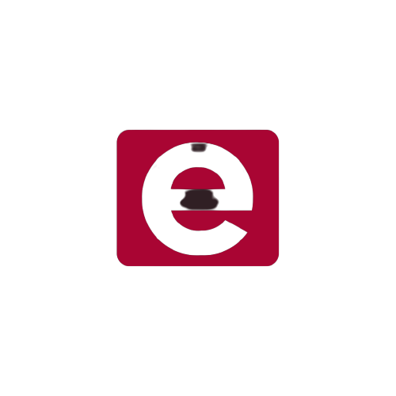
erlang
3 anos de experiência
Erlang é uma linguagem de programação de uso geral e um sistema para execução. Foi desenvolvida pela Ericsson para suportar aplicações distribuídas e tolerantes a falhas a serem executadas em um ambiente
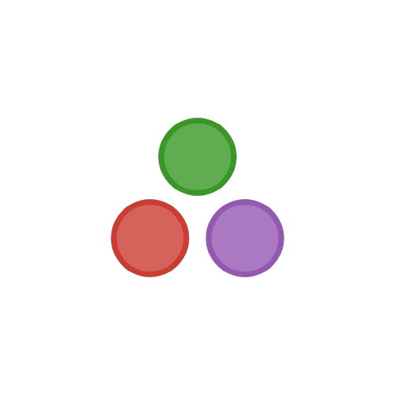
julia
3 anos de experiência
Julia é uma linguagem de programação dinâmica de alto nível projetada para atender os requisitos da computação de alto desempenho numérico e científico.
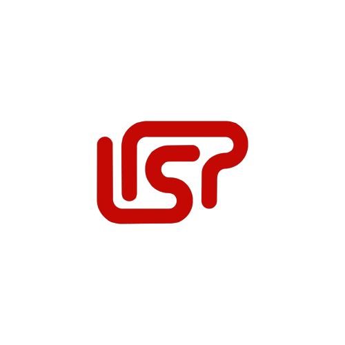
lisp
3 anos de experiência
Lisp é uma família de linguagens de programação concebida por John McCarthy em 1958. Num célebre artigo, ele mostra que é possível usar exclusivamente funções matemáticas
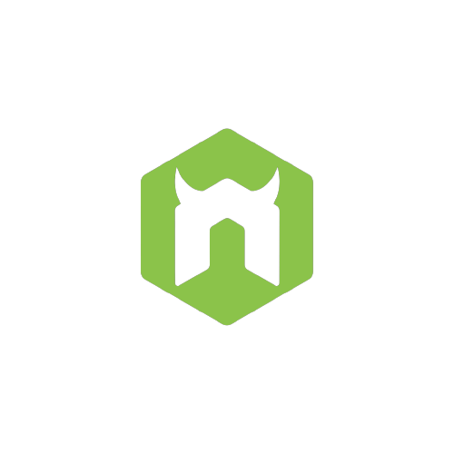
nodemon
3 anos de experiência
O nodemon é uma biblioteca que ajuda no desenvolvimento de sistemas com o Node. js reiniciando automaticamente o servidor. Imagine a seguinte situação, você está desenvolvendo uma aplicação
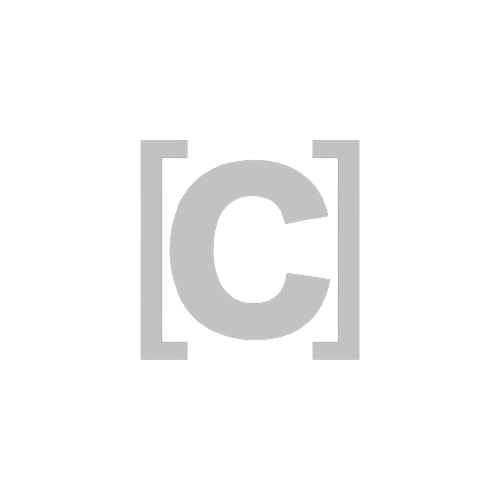
Objective-C
3 anos de experiência
Objective-C, denominado frequentemente de ObjC ou mais raramente de Objective C ou Obj-C, é uma linguagem de programação reflexiva orientada a objecto que adiciona transmissão de mensagens.
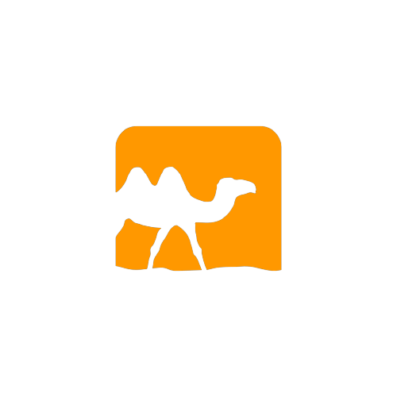
OCaml
3 anos de experiência
Caml, Trata-se da linguagem Caml com a adição de suporte de técnicas de orientação a objetos e algumas alterações e extensões de sintaxe.
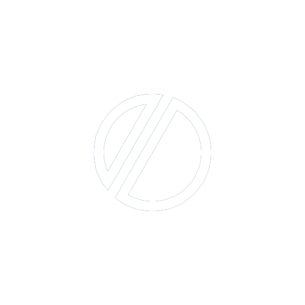
odin
3 anos de experiência
odin, Uma Ferramenta Visual para o Desenvolvimento de Modelos de Detecção
de Objetos com Deep Learning.
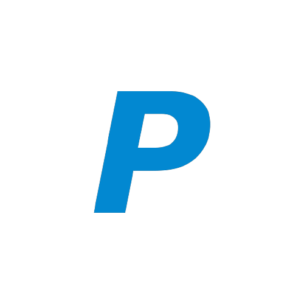
pascal
3 anos de experiência
Pascal é uma linguagem de programação orientada por objetos, que recebeu este nome em homenagem ao matemático e físico Blaise Pascal. tendo em mente encorajar o uso de código estruturado.
pawn
3 anos de experiência
Pawn é uma linguagem de script de código aberto e de quarta geração, criada em 1998 pela empresa CompuPhase. De influência da linguagem de programação C
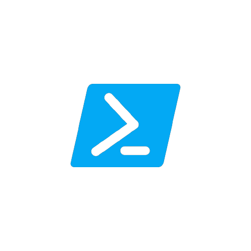
powershell
3 anos de experiência
PowerShell é um shell de linha de comando baseado em tarefas e linguagem de script desenvolvido no .NET. Inicialmente, apenas um componente do Windows, o PowerShell tornou-se de código aberto.
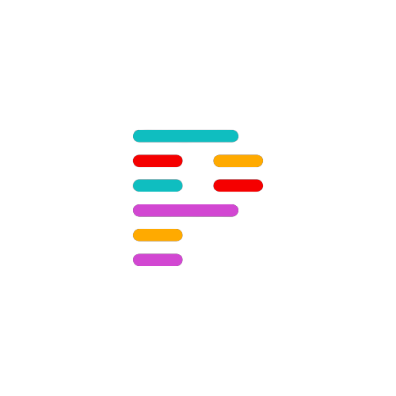
prettier
3 anos de experiência
Prettier. O Prettier é uma extensão que te ajuda a formatar e padronizar códigos! Tem suporte a algumas linguagens, como Typescript, JSX, Vue, Angular, CSS, GraphQL, Java, PHP, Ruby, entre outras.
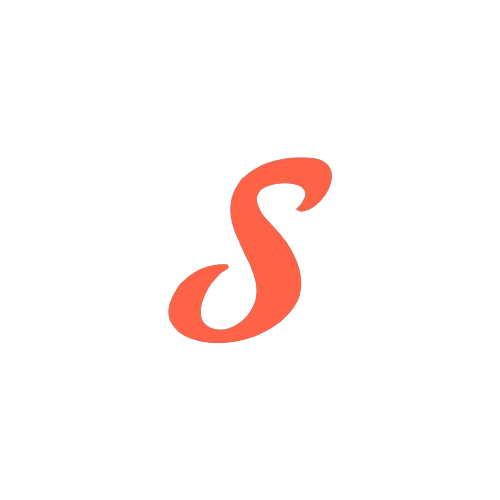
stylus
3 anos de experiência
Stylus é uma linguagem de pré-processador de folha de estilo dinâmica que é compilada em Folhas de Estilo em Cascata. Seu design é influenciado por Sass e LESS
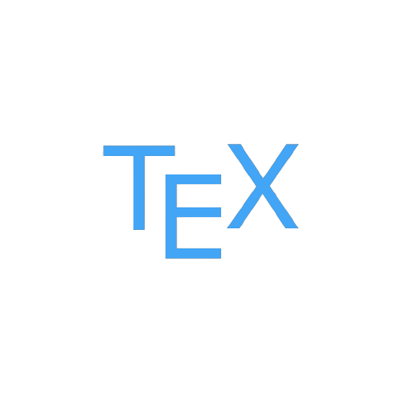
tex
3 anos de experiência
O TeX é um sistema de tipografia desenhado e escrito principalmente por Donald Knuth e lançado em 1978.
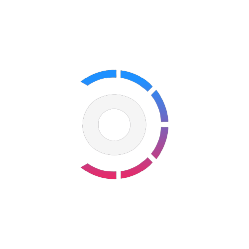
turbo
3 anos de experiência
O Turbo Pascal é um ambiente de desenvolvimento integrado e um compilador para a linguagem de programação Pascal, criado pela empresa Borland.
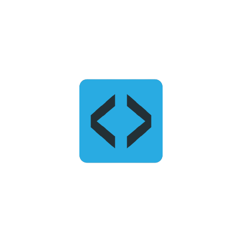
xml
3 anos de experiência
XML é uma recomendação da W3C para gerar linguagens de marcação para necessidades especiais. É um dos subtipos da SGML capaz de descrever diversos tipos de dados. Seu propósito
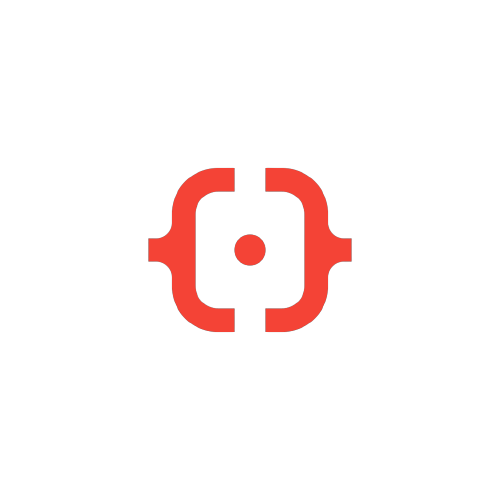
yaml
3 anos de experiência
YAML é um formato de serialização de dados legíveis por humanos inspirado em linguagens como XML, C, Python, Perl, assim como o formato de correio eletrônico
zig
3 anos de experiência
Zig é uma linguagem de programação de multiparadigma voltado para sistemas e compilável, embora seja de propósito geral, estaticamente tipada, projetada por Andrew Kelley.
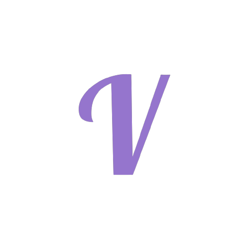
vala
3 anos de experiência
Vala é uma linguagem de programação orientada a objetos, com sintaxe inspirada em C#. Com um compilador auto-hospedado que gera código em C que usa GObject.
twig
3 anos de experiência
Twig é um sistema que te permite criar templates para utilizar em PHP (uma das linguagens de programação). É esse sistema, responsável por fornecer uma resposta para assuntos visuais
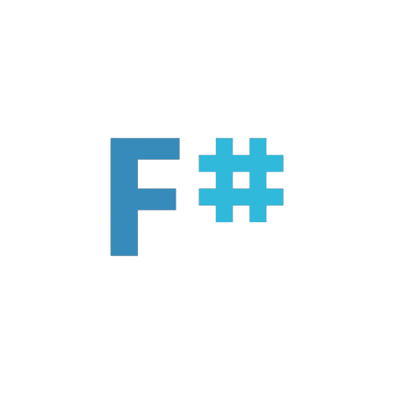
fsharp
3 anos de experiência
F# é uma linguagem de programação multiparadigma para a plataforma .NET, que engloba programação funcional, imperativa e orientada a objetos. Pertence à família das linguagens.
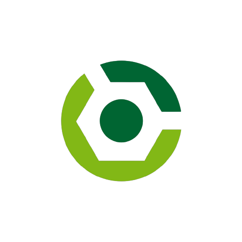
gradle
3 anos de experiência
O Gradle é um build system muito moderno, que reúne as melhores características de outros sistemas de build em um só. Com ele, é possível escrever código em Java para executar seus scripts durante o build
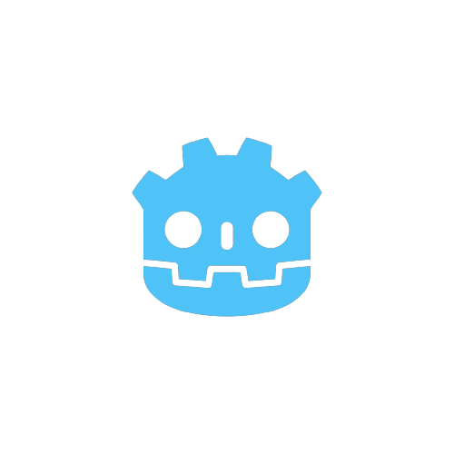
godot
3 anos de experiência
As linguagens suportadas oficialmente em Godot são GDScript, Visual Scripting, C# e C++. Veja as subcategorias para cada linguagem na seção de scripting
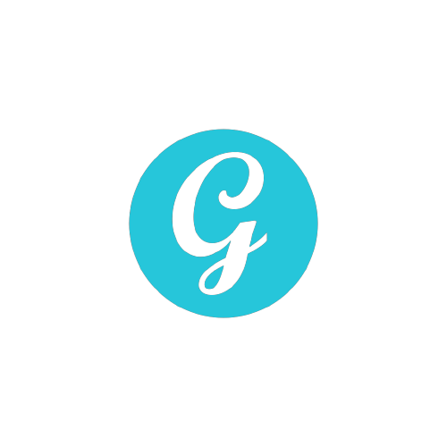
groovy
3 anos de experiência
Groovy é uma linguagem de programação orientada a objetos desenvolvida para a plataforma Java como alternativa à linguagem de programação Java. Groovy possui características de Python, Ruby.
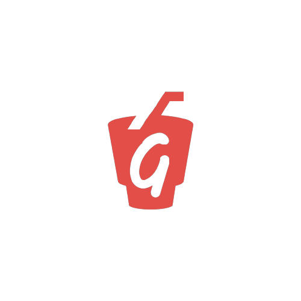
gulp
3 anos de experiência
Gulp. Ele é um automatizador que ajuda no desenvolvimento nas tarefas dolorosas ou demoradas durante o trabalho de desenvolvimento dos projetos. Ele possui uma variedade imensa
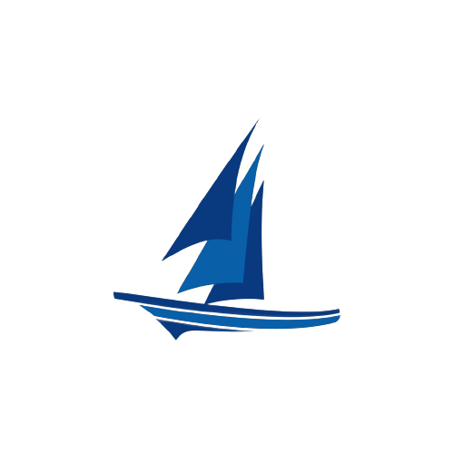
harbour
3 anos de experiência
O Harbour é um compilador moderno e rápido de software livre para a linguagem xBase. O Harbour é um compilador multiplataforma e sabe-se que compila e executa em todas ela.
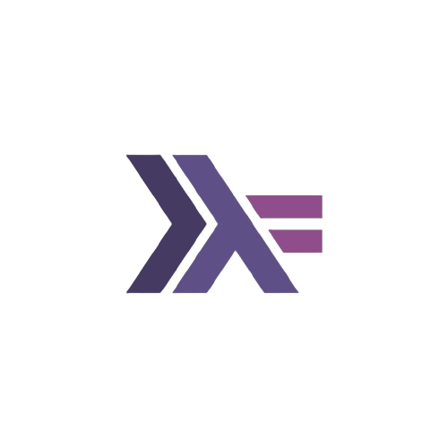
haskell
3 anos de experiência
Haskell é uma linguagem de programação puramente funcional, de propósito geral, nomeada em homenagem ao lógico Haskell Curry, Como uma linguagem funcional, a estrutura de controle primária.
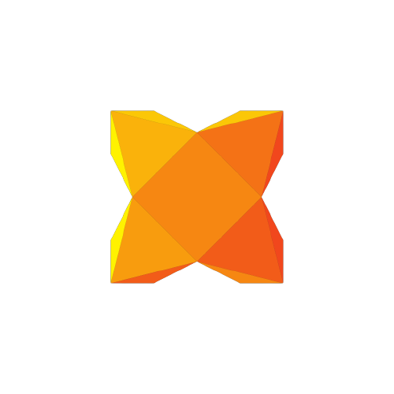
haxe
3 anos de experiência
Haxe é uma linguagem de programação e compilador de plataforma cruzada de alto nível de código aberto que pode produzir aplicativos e código-fonte, para muitas plataformas de computação.
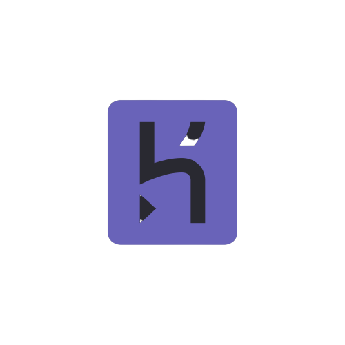
heroku
3 anos de experiência
heroku, Trata-se de uma PaaS (Plataforma como um Serviço) que permite hospedagem, configuração, testagem e publicação de projetos virtuais na nuvem
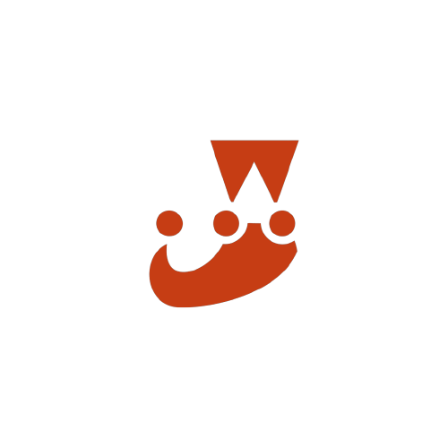
hjest
3 anos de experiência
Jest é uma das ferramentas de teste unitário mais difundidas dentro da comunidade de JavaScript. Jest é um framework de teste unitário de código aberto em JavaScript.
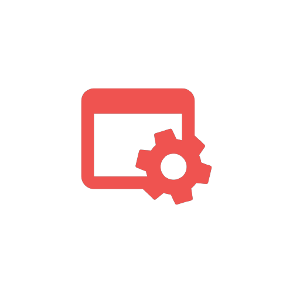
makefile
3 anos de experiência
Um makefile é um arquivo (por padrão chamado de "Makefile") contendo um conjunto de diretivas usadas pela ferramenta de automação de compilação make para gerar um alvo/meta.
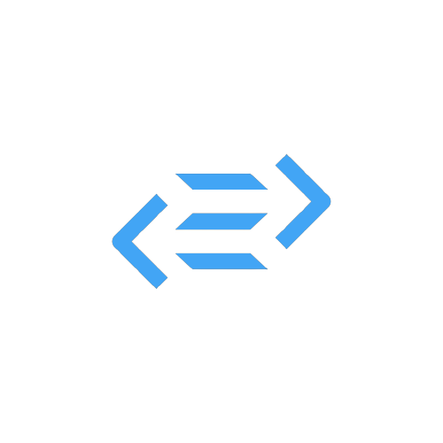
purescript
3 anos de experiência
PureScript é uma linguagem de programação funcional fortemente tipada , cuja compilação produz código JavaScript . Ele pode ser usado para desenvolver aplicativos da web, aplicativos.
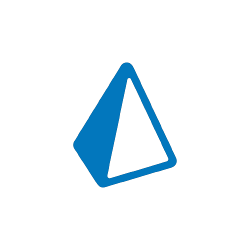
prisma
3 anos de experiência
Prisma, é uma linguagem de programação baseada em Lua e também um interpretador para esta linguagem.
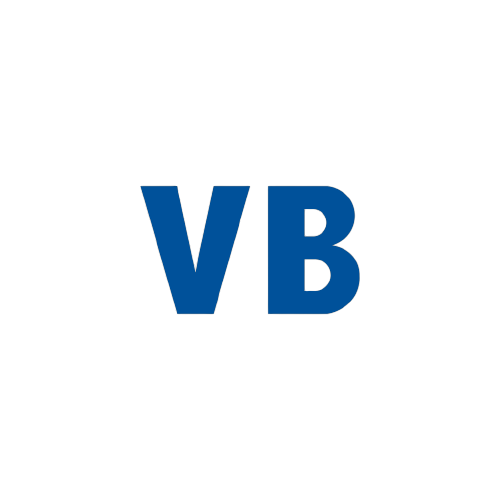
Visual Basic
3 anos de experiência
O Visual Basic é uma linguagem de programação produzida pela empresa Microsoft, e é parte integrante do pacote Microsoft Visual Studio.